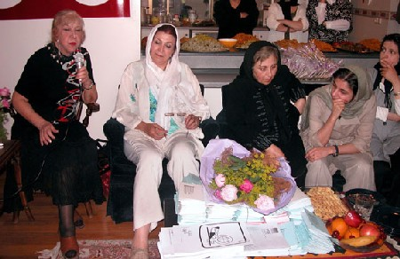
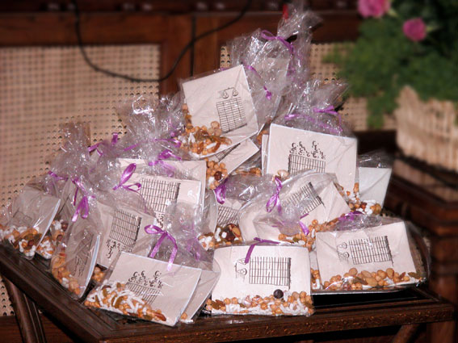
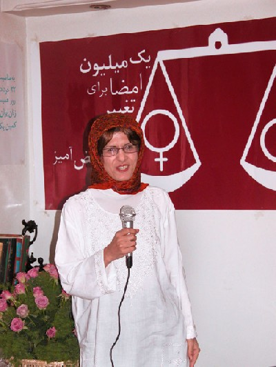
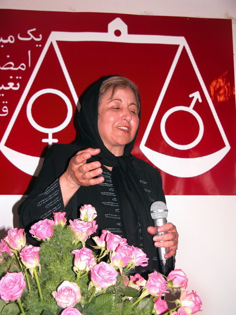

|
|

شيرين عبادي در مراسم سالگرد 22 خرداد: هيچ كس نمي تواند كمپين يك ميليون امضا را متوقف كند
مريم حسين خواه/ عكس:راحله عسگري زاده، سارا لقمانی
چهار شنبه23 خرداد 1386
22 خرداد روز همبستگی زنان ایران است و زمانی برای بلند شدن ندای برابری خواهانه شان. فرقی نمی کند که جلوی داشنگاه تهران باشند، یا در میدان هفت تیر یا مثل امسال در خانه یکی از اعضای کمپین یک میلیون امضا. هر جا که باشند دست هاشان بهم گره می خورد و سرود ای زن ای حضور زندگی سر می دهند.
اینها را یکی از دختران جوان کمپین می گوید که تجمع 22 خرداد، او را به جنبش زنان پیوند داده است.
ساعت 11 صبح است و زنان و مردانی که در این یکسال بارها به خیابان آمده اند، کتک خورده اند، احضار شده اند و زندان رفته اند... یکی یکی با شاخه ای گل از راه می رسند. امروز 22 خرداد است و اگر نمی شود در خیابان و حتی سالنی کوچک در این شهر بزرگ گردهم آمد، درهای خانه هایمان را باز می کنیم و یاد 22 خرداد را گرامی می داریم.

«خدیجه مقدم»، سخن را آغاز می کند و با همان لحن مادرانه همیشگی اش می گوید که هیچ وقت شیرینی 22 خرداد 84 و تلخی خشونت 22 خرداد 85 را فراموش نمی کند و 22 خرداد را روز ملی زنان ایران می داند.
مقدم که از یک ماه قبل برای برگزاری مراسم 22 خرداد در فرهنگسرای بانو تقاضای مجوز کرده بود، می گوید:«بعد چندین و چند بار پیگیری ما و پاسخگو نبودن آنها، بالاخره در آخرین روزها گفتند که به ما مجوز نمی دهند. فرهنگسراهای دیگر هم همینطور. چند جای دیگر رفیتم اما هیچ کدامشان حاضر نشدن یک سالن از فضای عمومی شهر را برای چند ساعت در اختیار ما که شهروندان این شهریم بگذارند.»
"آنچه ما در دبستان دشوار زندگی اجتماعی جدیدخود آموخته ایم این نکته است که فرهنگ بشری به هیچ روی آن چیز ثابت و مستحکمی که زمانی می پنداشتیم نیست.........همیشه باید آماده زمین لرزه های سخت باشیم که ممکن است جهان فرهنگ ما و نظام اجتماعی ماراازبیخ و بن بلرزانند "

اینها را منصوره شجاعی، مجری برنامه می گوید و ادامه می دهد:«کمپین های مختلف جنبش زنان مانند کمپین سنگسار و کمپین یک میلیون امضا به عنوان تجسمی واحد از مطالبات حقوقی زنان نیز از آن دست زمین لرزه هایی است که تکانه هایش نه ویرانی که امید آبادانی را به جنبش زنان پیشکش کرده است.»
حضور زنان در خرداد ماه های داغ اخیر جرقه های نه چندان کوتاه عمر جنبش را به آتش پایدار کمپین یک میلیون امضا و خیزش های پرشور دیگر تبدیل کرد و اینک در این خرداد داغ نیز به پاسبانی آتش خویش نشسته ایم.
با این مقدمه بود که شجاعی از «سیمین بهبهانی»، که با دم شعرش این آتش مهربان را به پا نگاه داشته درخواست کرد تا برنامه را با اشعارش آغاز کند.

شهلا لاهیجی:22 خرداد جواب خستگی هایم را گرفتم
شهلا لاهیجی، مدیر نشر روشنگران اولین سخنران برنامه بود.او که از 10 سالگی تا کنون در مراسم های مختلفی به مناسبت 8 مارس و سایر مناسبت های جنبش زنان شرکت کرده، گفت به حضور در این جمع افتخارمی کند چرا که هیچ حزب و دسته ای پشت این جریان نیست، جز خود زنان و مردان برابری خواه.
وي که سایقه سال ها کار در حوزه زنان را در کارنامه خود دارد، ادامه داد:«گاهی بعد از 27 سال جنگیدن احساس خستگی می کردم و می پرسیدم کارهایم حاصلی داشته؟امروز، 22 خرداد سال قبل و سال قبل تر و همه روزهایی که چیزی به نام جریان مستقل زنان را به چشم دیده ام پاسخم را گرفته ام و مطمئن شده ام که پیروز از آن ماست.»

لاهيجي با اشاره به توفیق این کمپین درایران و جهان ، گفت:« توفیق کمپین در ایران مهم تر است، چون من تاثیرش را در جاهایی دیده ام که نه خبری از روشنفکری بوده و نه چیزی از فمنیسیم شنیده اند، اما نه تنها بیانیه کمپین را امضا می کنند بلکه می خواهند خودشان هم امضا جمع کنند.»
مدیر نشر روشنگران با تاکید بر اینکه این جریان چنان گسترده شده که پیروزی اش گریز ناپذیر است، گفت:«حالا می توانم با خیال راحت کوله ام را بر دوش شما جوانان بگذارم، روی صندلی ام لم بدهم و بگویم من کارم را کرده ام.»
زنان وکیل، حامیان همیشگی جنبش زنان
در روزهای سختی که یاران جنبش زنان، از این دادگاه به آن دادگاه می رفتند و از این زندان به آن زندان برده می شدند، همراهی وکلایی که با سلاح قانون از ما دفاع می کردند، قوت قلبی برای همه فعالان این جنبش بود.
«نسرین ستوده»، که وکالت بسیاری از حاضران در جمع را بر عهده داشت، به نمایندگی از این زنان حقوق دان کنار ترازوی عدالتی که نماد کمپین است، ایستاد و ورود وکلای زن به جنبش زنان و اصرار زنانی که مشکلات حقوقی دارند به گرفتن وکیل زن را اتفاق فرخنده ای نامید که حاصل تلاش این سال هاست.

ستوده با اشاره به تیم 6 نفره ای که با مسئولیت شیرین عبادی وظیفه دفاع از فعالان جنبش زنان را بر عهده گرفته اند، وکلای جنبش زنان را فراتر از این گروه دانست و گفت در این مسیر همیشه فکر کرده ام باید علاوه بر پیگیری حقوقی، به فعالانی که وکلاتشان را بر عهده دارم روحیه بدهم، اما بارها در اوج نگرانی های من، شما با عزم راسخ تان برای احقاق حقوق برابر به من و همکارانم روحیه داده اید.»
بهاره هدایت: 22خرداد گشایشی برای نزدیکی زنان و دانشجویان
دانشجویان هم در این چند سال اخیر همیشه دوشادوش جنبش زنان بوده اند و 22 خرداد چنان که بهاره هدایت، دبیر کمسیون زنان دفتر تحکیم وحدت می گوید نقطه گشایشی بود برای نزدیک شدن جریانات دانشجویی و زنان به یکدیگر.
بهاره که به قول منصوره شجاعی سمبل پیوند جنبش زنان و جنبش دانشجویی است، گفت:«در 22 خرداد 85 مطالبات زنان در بخشی از جنبش دانشجویی که بیشتر سیاسی بود و این مطالبات را نمی شناخت مطرح شد و فرصتی برای همکاری بیشتر در اختیار هر دوطرف قرار گرفت.»

او با یاداوری بازداشت مهندس موسوی خوئینی دبیر دفتر تحکیم وحدت در تجمع سال گذشته، اضافه کرد:«بازداشت فردی سیاسی که به هر حال در بخشی از حاکمیت حضور داشته به خاطر مطالبات جنبش زنان، باعث شد در کنار انعکاس گسترده اخبار این بازدشات مطالبات جنبش زنان نیز طرح شود و به میان اقشار سیاسی برود.»
هدایت که تا پیش از این مطالبات جنبش زنان را به عنوان یک دانشجویی فعال سیاسی نمی شناخته، اظهار امیدواری کرد که بتوانیم این خواسته ها را به میان طیف های مختلف جامعه ببریم.
این بار در کوچه پس کوچه های شهر، به دنبال یک میلیون امضا
در ادامه برنامه، زن جوانی پشت میکروفون می رود که سال گذشته در همین ساعت ها با دستی شکسته شده روی زمین کشیده می شد و عکس های خشونتی که بر او روا رفت هنوز هم در سایت های اینترنتی حک شده اند.

«دلارام علی»،به جای سخنرانی آن روز را روایت کرد:«ضربات باتوم شروع شد. باتوم ها بالا می رفتند و بدون مقصدی مشخص پایین می امدند.روی سرها، دست ها، صورتها. و ما فقط سرود می خواندیم: ای زن ای حضور زندگی.... ضربات شدیدتر می شد و صدای ما بالاتر می رفت. بغض کرده بودم.. صدایم کاملا می لرزید و بدنم نیز.پیش از این هم کتک خورده بودم، اما چیزی که لرزه بر صدایم انداخته بود، طنینن هماهنگ کلاممان بود، نه ضربات باتوم.»
دلارام از دستش که شکسته شد گفت و خودش که روی زمین کشدندنش و بازجویی که فریاد می زد و زندانی که بد است:«می گذرد روزهای زندان. روزهایی که بد است. در جایی که بد است. اما تو خوب می مانی چون می دانی چرا رفته ای و می داین که باید بایستی و مبارزه کنی. یکبار در میدان هفت تیر و یکبار هم در کوچه پس کوچه های شهر برای جمع کردن یک میلیون امضا.»

مادران کمپین، همراهانی برای همیشه
پس از سخنان دلآرام، نوبت به قدردانی از مادران و پدرانی رسید که در روزهای سخت باداشت و زندان کنارمان بودند. با قوت قلبهایشان. با همراهی شان و با وثیقه ها و کفالت هایی که نه فقط برای دختران خود، بلکه برای همه دختران کمپین می اوردند.
قدردانی از پدر و مادر راحله عسگری زاده که وثیقه منزلشان را برای آزادی یکی از دختران کمپین گرو گذاشته اند، سپاسی بود از طرف کمپین یک میلیون امضا به همه خانواده هایی که امضا می کنند. امضا می گیرند و با حضورشان مقابل اوین و وزرا به دخترانشان قوت قلب می دهند.

این همراهی در روزهای سخت زندان اما، فقط بخشی از حضور مادران است. بیشترین امضاهای کمپین را هم اعضای مادران کمپینی جمع کرده اند: هر کدام بین 3 هزار تا 5 هزار امضا جمع کرده اند و علاوه برآن در کمیته های مختلف کمپین هم فعال هستند.
رضوان مقدم که تا کنون 5 هزار امضا جمع کرده، به نمایندگی از این جمع گفت:«اولین روز شروع کمپین با خودم عهد کردم ماهی 500 امضا جمع کنم و حالا که 9 ماه گذشته توانسته ام 500 امضا هم بیشتر از تعهدم بگیرم.»
او با اشاره به روشهایی که برای جمع آوری این تعداد امضا داشته، گفت:«امضا گرفتن کار سختی است و من برای همین 5هزار امضا با 20 هزار نفر حرف زده ام و 20 هزار دفترچه پخش کرده ام.»

پس از این نوبت متاخرترین زندانی کمپین بود که به جرم همدستی با یکی از دوستانش که در خیابان مشغول جمع آوری امضاء بود بازداشت شده بود.«احترام شادفر» که روز گذشته از زندان وزرا ازاد شده بود و همانند همه بازداشتی های کمپین جرمش حق طلبی و برابری خواهی بود، با شرح اوضاع اسف بار زندان وزرا تجربیاتش از این بازداشت یک روزه را بیان کرد.

زنانی که در 22 خرداد به جنبش زنان پیوستند
«ژیلا بنی یعقوب»، دبیر سرویس زنان و اجتماعی روزنامه سرمایه که از بازداشت شدگان تجمع سال گذشته بود، با یاد کردن از زنان ومردانی که 22 خرداد گذشته به زندان رفتند، گفت: « یادمان نرود 22 خرداد سال گذشته بیش از 70 نفر بازادشت شدند که تعداد زیادی اژ انها گمنام بودند و تا امروز هم نام برخی شان را نمی دانیم.»

او ادامه داد:«برخی از این زنان که در آن چند روز با آنها همسلول بودم فقط از طریق اطلاع رسانی در جریان برنامه قرار گرفته بودند و بااین وجود با روحیه ای عالی زندان را سپری کردند و برخی دیگر هم که آن روز اتفاقی بازداشت شده و فقط در حال عبور از میدان هفت تیر بودند نیز وقتی در جریان اهداف تجمع قرار گرفتند، گفتند که در تجمعات بعدی آگاهانه و پیگیرانه شرکت خواهند کرد.»
شیرین عبادی: بعد از گذشت یک سال از تجمع 22 خرداد، می توان گفت که حرکتمان درست بوده است
حسن ختام سالگرد تجمع 22 خرداد، سخنان شیرین عبادی بود.بانوی صلح ایران که در روزهای سخت جنبش زنان همراه و قوت قلب یاران جنبش بوده و هرجای جهان که رفته ندای حق خواهی زنانی ایرانی را فریاد کرده است.
عبادی تجمع 22 خرداد واعتراض علنی زنان را تلنگری بر وجدان جامعه عنوان کرد و گفت:«بعد از گذشت 1 سال از تجمع 22 خرداد سال 85، الان که به پشت سر نگاه می کنیم متوجه می شویم که حرکتمان درست بوده و تردیدها و دلهره های آن روز بی مورد بوده است»
او ادامه داد:«ما هزینه دادیم، اذیت شدیم، برایمان پرونده شد، اما یادمان باشد هیچ دستاوردی رایگان نیست و هیچ چیز بی بها بدست نمی آید.»

بانوی صلح ایران 22 خرداد را یک تاریخ به یادماندنی در جنبش زنان برشمرد و خاطر نشان کرد:« شکایت زنان کتک خورده از پلیس را از جمله دستاوردهای این حرکت عنوان کرد. به گفته او:این شکایت نشان داد که ما نمی ترسیم. دوباره به خیابان می اییم و حق مان را می خواهیم.»
شیرین عبادی در ادامه با پرداختن به کمپین یک میلیون امضا به عنوان دستاورد گرانقدر تجمع 22 خرداد گفت که اگر فقط حاصل تحمع 22 خرداد تولد کمپین یک میلیون امضاء باشد دستاورد خیلی بزرگی است. وی گفت:« تحت تاثیر این حرکت بود که امروز ما از مذهبی و غیرمذهبی به صرف زن بودنمان در کمپین یک میلیون امضاء گردهم آمدیم و حقوق برابر می خواهیم.»
او تاکید کرد:«کمپین یک میلیون امضا چنان گستردگی پیدا کرده که هیچ کس حتا خود ما، اعضای کمپین هم دیگر نمی توانیم جلوی آن را بگیریم و متوقف اش کنیم.»

«از این فرصت می خواهم استفاده کنم و فقط احساس خوشحالی و غرور خودم را به عنوان یک عضو کمپین یک میلیون امضاء اعلام کنم، من واقعا آدم خوشبختی هستم که در حرکتی سهیم هستم که می توانم از تجربه و درایت پیشکسوتانی چون سیمین بهبهانی، شیرین عبادی و شهلا لاهیجی و از طراوت، خلاقیت، پویایی و شور نسل جوان جنبش زنان بهره مند شوم.» این جمله «نوشین احمدی خراسانی» نیز پایان بخش برنامه ای بود که با حضور بیش از 100 نفر از فعالان جنبش زنان، به مناسبت سالگرد 22 خرداد برگزار شد.